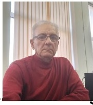

شهریار شمسی
مهندس نرمافزار | متخصص شبکه و برنامهنویسی
تهران
۰۹۱۲۵۵۷۵۷۲۷
۰۲۱۲۲۹۶۴۶۶۳
shahriar.shams2009@gmail.com
خلاصه حرفهای
مهندس کامپیوتر با بیش از ۲۰ سال سابقه برنامهنویسی و بیش از ۱۸ سال تجربه در حوزه شبکه،
سختافزار و نرمافزار در محیطهای سازمانی و صنعتی. دارای کارشناسی ارشد مهندسی نرمافزار
از دانشگاه شهید بهشتی و کارشناسی مهندسی کامپیوتر از دانشگاه پیام نور. مسلط به برنامهنویسی
تحت DOS با FoxPro، پایگاهداده، SQL Server و امنیت سایبری (DDOS).
تحصیلات
کارشناسی ارشد مهندسی نرمافزار
دانشگاه شهید بهشتی
۱۴۰۲-۱۴۰۰
کارشناسی مهندسی کامپیوتر
دانشگاه پیام نور
۱۳۹۶ – ۱۴۰۰
سوابق شغلی
مسئول شبکه، اینترنت، سختافزار و نرمافزار
دی ۱۳۸۵ – تاکنون
معاونت سیاستگذاری اقتصادی، وزارت امور اقتصادی و دارایی
- مدیریت و نگهداری شبکه سازمانی و اتصال اینترنت
- نصب، پیکربندی و عیبیابی سختافزار و نرمافزار
- پشتیبانی فنی کاربران و رفع مشکلات سیستمی
- نظارت بر امنیت شبکه و پشتیبانگیری اطلاعات
- هماهنگی با واحدهای فناوری اطلاعات برای بهروزرسانی زیرساختها
برنامهنویس
شهریور ۱۳۷۴ – شهریور ۱۳۸۵
مرکز تحقیقات الکترونیک و کامپیوتر دانشگاه
- طراحی و توسعه نرمافزارهای کاربردی
- تحلیل نیازمندیها و پیادهسازی راهحلهای نرمافزاری
- نگهداری و بهبود سیستمهای موجود
مسئول نرمافزاری
خرداد ۱۳۷۰ – شهریور ۱۳۷۴
شرکت صنعتی پایپوش
- مدیریت و توسعه سیستمهای نرمافزاری شرکت
- پشتیبانی نرمافزاری واحدهای صنعتی
برنامهنویس
اسفند ۱۳۶۸ – خرداد ۱۳۷۰
شرکت نرمافزاری گستره نگار
- توسعه نرمافزار تحت DOS با FoxPro
- کار با پایگاهداده
مهارتها
فنی:
برنامهنویسی تحت DOS با FoxPro
پایگاهداده (Database)
SQL Server
امنیت سایبری و مقابله با DDOS
مدیریت شبکه و اینترنت
نصب و پشتیبانی سختافزار و نرمافزار
پشتیبانگیری اطلاعات
عمومی:
مدیریت و هماهنگی تیم فنی
حل مسئله و عیبیابی
کار تیمی و ارتباط سازمانی
دورهها و گواهینامهها
- دوره SQL Server
- دوره امنیت سایبری (DDOS)
زبانها
فارسیزبان مادری
انگلیسیمسلط